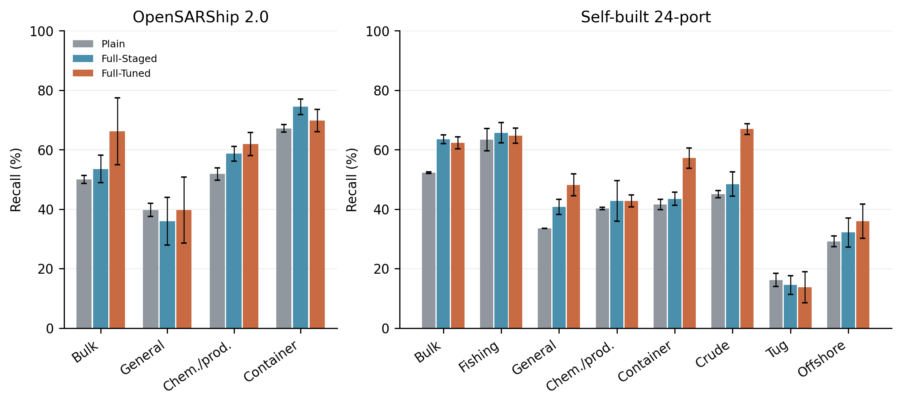
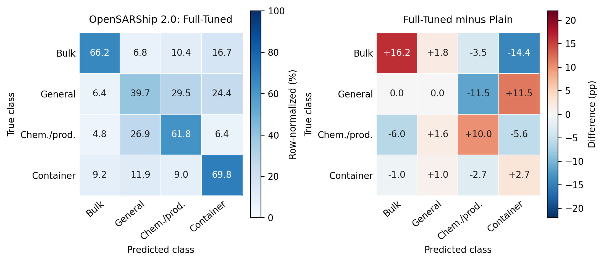
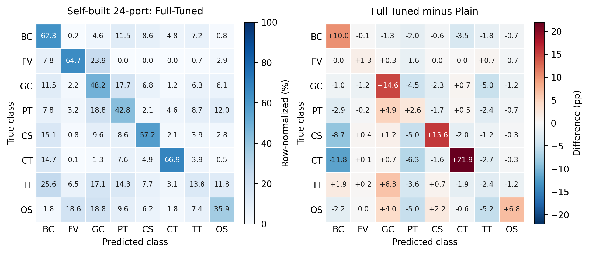

Full-Tuned为完整模型全骨干微调版，均使用原始极化可用性。测试种子17、29、43；OSS2共378条，24港共3075条。矩阵为每种子统计后平均，不是多模型集成。
| 数据集 | OA (%) | BA (%) | Macro-F1 (%) |
|---|---|---|---|
| OpenSARShip 2.0 | 64.727 ± 2.702 | 59.396 ± 3.831 | 57.693 ± 3.187 |
| 自建24港 | 52.076 ± 0.244 | 48.970 ± 0.808 | 46.520 ± 0.637 |
误差棒为三个训练种子的样本标准差。



差值=Full-Tuned−基线，单位为百分点。对角线增加是召回提高；非对角线减少是相应混淆降低。红色仅表示增加，不能统一理解为提升。两个主差值矩阵色标相同。
24港矩阵缩写BC、FV、GC、PT、CS、CT、TT、OS依次为散货船、渔船、普通货船、化学品／成品油轮、集装箱船、原油轮、拖轮／拖带船、海工补给船。